לב העוטף · שדרותדווקא עכשיו עוברים לשדרות
בהפקת
יום הכניסה. היא פותחת את דלת הזכוכית אל השמש, הבת רצה למרפסת, שכן עוזר עם הארגזים, ובערב הם כבר חלק מהרחוב. בית חדש, קהילה חזקה, התחלה חדשה.
הגרסה הסופית לצפייה: 20 שניות, 9:16 לרשתות החברתיות, עם קריינות, מוזיקה וכרטיס הסיום.
הטקסט מהבריף שלכם, מילה במילה, כפי שהקריינית אומרת אותו בסרטון.
| קריינית | שדרות בתנופה של צמיחה והתחדשות. | 0–3 |
| קריינית | זה הרגע לבחור למען עתיד טוב יותר. | 3–6 |
| קריינית | להתחיל מחדש, עם קהילה חזקה. | 6–9 |
| קריינית | בית חדש, ואיכות חיים בלי פשרות. | 9–12 |
| קריינית | דווקא עכשיו, עוברים לשכונת תקומת ישראל. | 12–16 |
| קריינית | מוגש מטעם עיריית שדרות ומשרד הבינוי והשיכון. | 17–20 |
| כיתוב | כל משפט של הקריינית על המסך · כרטיס סיום (17–20) |
כל דמות מוצגת בארבע זוויות פנים ובעמידה מלאה, בלבוש של הסרטון.
 משפחה 3היא: שיער כהה חלק בקוקו גבוה, מבנה ספורטיבי, אוברשירט כתום בהיר על גופייה לבנה. הוא: שיער חום בהיר קצר, זקן מטופח, טי-שירט כחול רויאל. הבת: שיער כהה חלק בקוקו בצד, שמלה צהובה.
משפחה 3היא: שיער כהה חלק בקוקו גבוה, מבנה ספורטיבי, אוברשירט כתום בהיר על גופייה לבנה. הוא: שיער חום בהיר קצר, זקן מטופח, טי-שירט כחול רויאל. הבת: שיער כהה חלק בקוקו בצד, שמלה צהובה.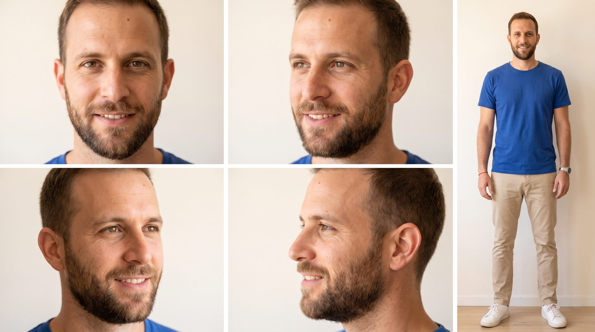
משפחה 3 משפחה 3
משפחה 3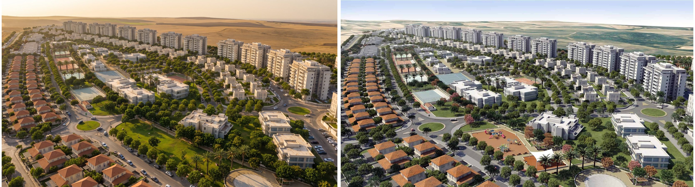
השכונה מהאווירמימין: ההדמיה שלכם · משמאל: כך זה ייראה בסרטון. כך תיראה השכונה ממבט רחפן בשעת זהב, לפי ההדמיה האווירית שלכם. הפריים הפותח של שוט 1 ובסיס לשוט 6. הדירה החדשהיום הכניסה: דירה ריקה, ארגזים, מפתחות על האי, דלת הזזה למרפסת שמשקיפה על השדות. שוטים 2–3.
הדירה החדשהיום הכניסה: דירה ריקה, ארגזים, מפתחות על האי, דלת הזזה למרפסת שמשקיפה על השדות. שוטים 2–3. הרחובמימין: ההדמיה שלכם · משמאל: כך זה ייראה בסרטון. לפי ההדמיה VIEW D: בניינים של 4–7 קומות, טיח בהיר עם חלונות צרים, חיפוי עץ וקומות מרפסות, הפארק הלינארי עם הנחל והדשא הגבוה. שוט 4.
הרחובמימין: ההדמיה שלכם · משמאל: כך זה ייראה בסרטון. לפי ההדמיה VIEW D: בניינים של 4–7 קומות, טיח בהיר עם חלונות צרים, חיפוי עץ וקומות מרפסות, הפארק הלינארי עם הנחל והדשא הגבוה. שוט 4.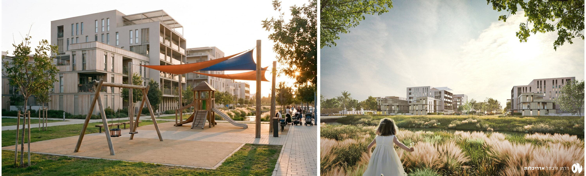
גן המשחקים בפארקמימין: ההדמיה שלכם · משמאל: כך זה ייראה בסרטון. נדנדות עץ, מגלשה, סככות צל בכתום וכחול, הבניינים בחיפוי עץ מאחור, שקיעה. שוט 5.אותו מבנה בשני הסרטונים, בצבעי השכונה: לוגו השכונה, "דווקא עכשיו עוברים לשדרות", שורת "מוגש מטעם", הלוגואים ו"הופק ב❤ על ידי" אפקט.
 לוח לבן על רקע השכונה, לוגו השכונה, "דווקא עכשיו עוברים לשדרות", "מוגש מטעם" וארבעת הלוגואים.
לוח לבן על רקע השכונה, לוגו השכונה, "דווקא עכשיו עוברים לשדרות", "מוגש מטעם" וארבעת הלוגואים.כך הסרטון בנוי בגרסה הסופית: לכל שוט פריים מהסרטון עצמו, מה רואים, מה שומעים, איך המצלמה מצלמת, האור והרגש.
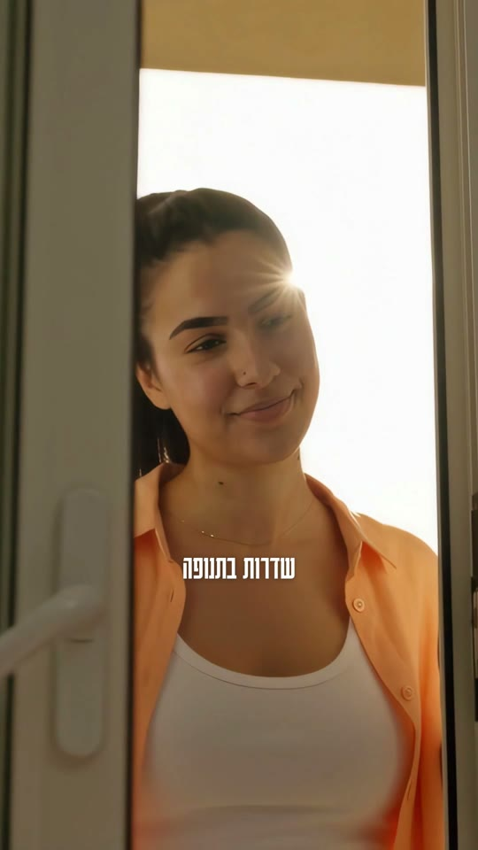
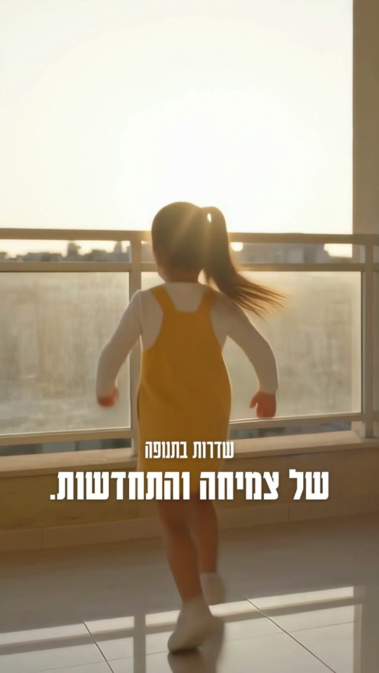
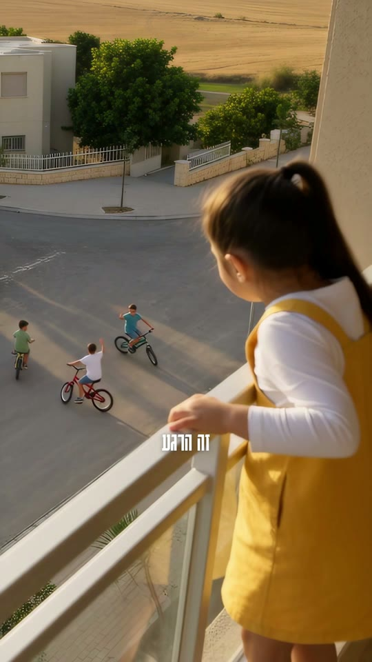
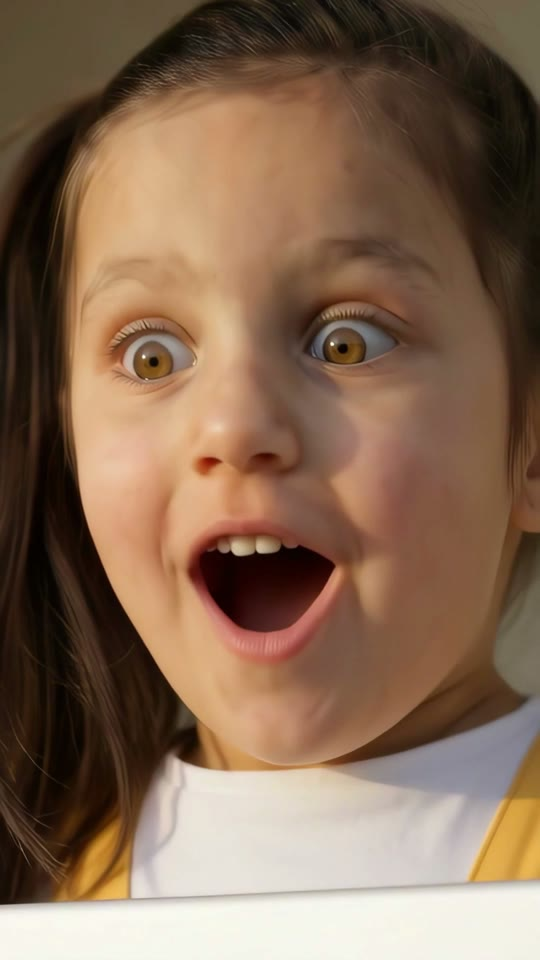
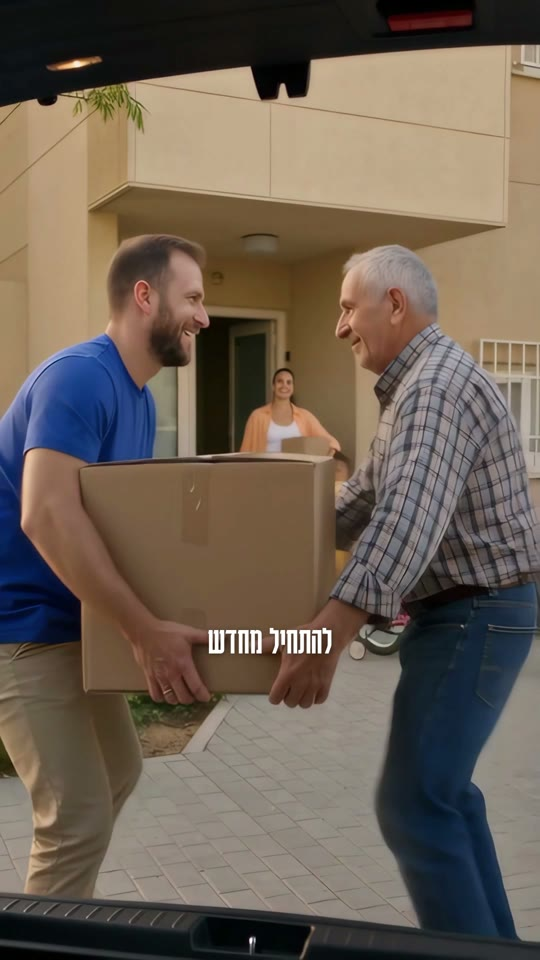
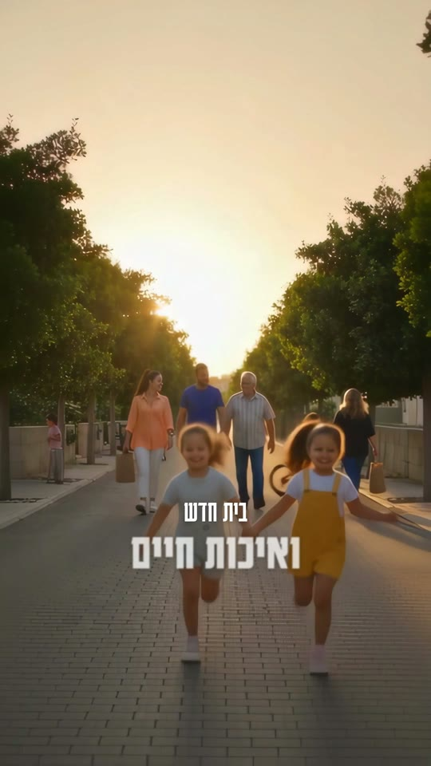
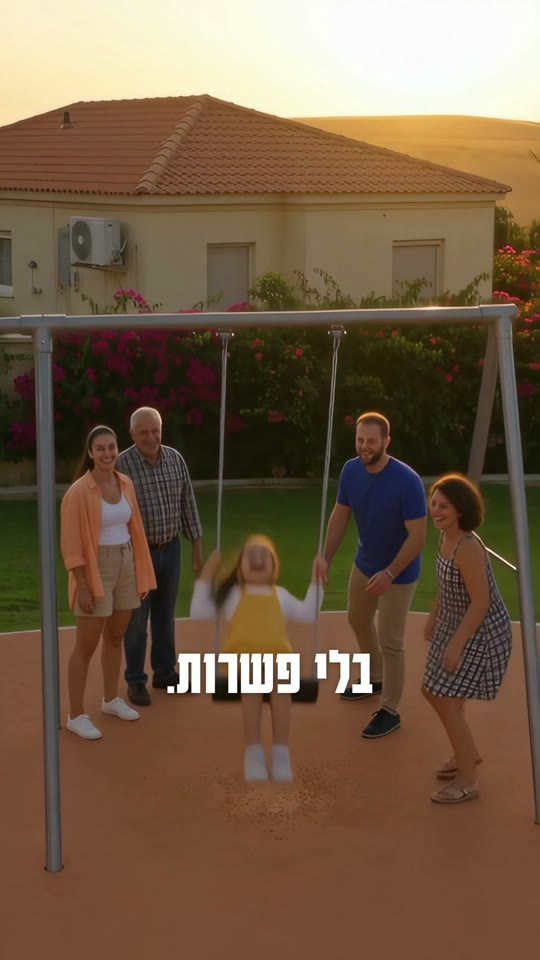
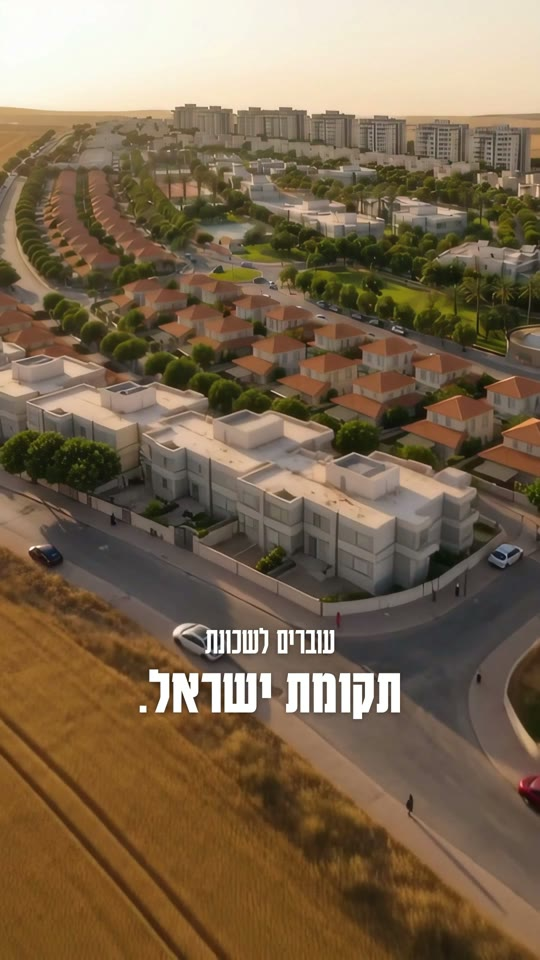
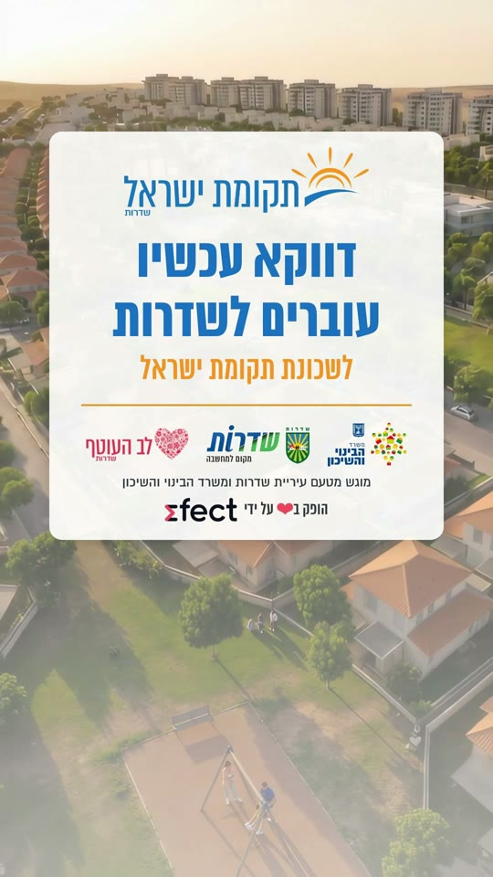
כל משפט של הקריינית מופיע גם על המסך בכתוביות, מחוץ לפנים, וכרטיס הסיום סוגר את הסרטון.
שני הסרטונים מופקים דרך Efect, בהובלת אוראל לוי: קריאטיב, תסריט, בימוי, יצירת הדמויות והשכונות, עריכה, קול, מוזיקה וגרפיקה, עד סרטונים מוכנים לפרסום.